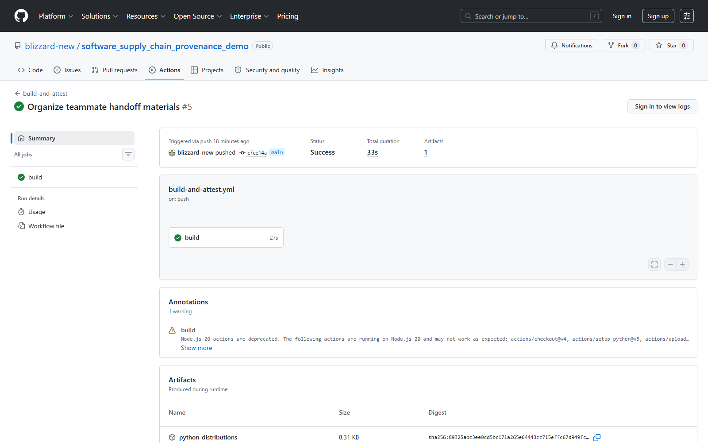
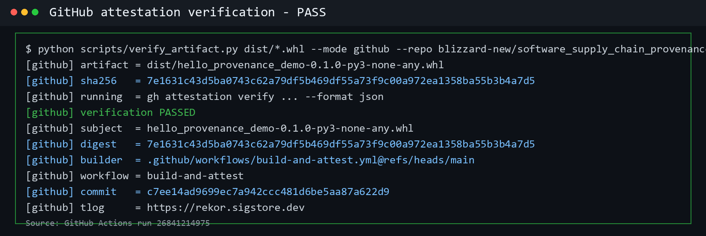
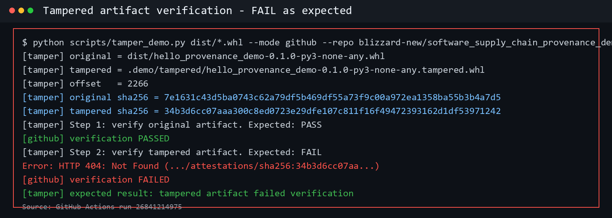
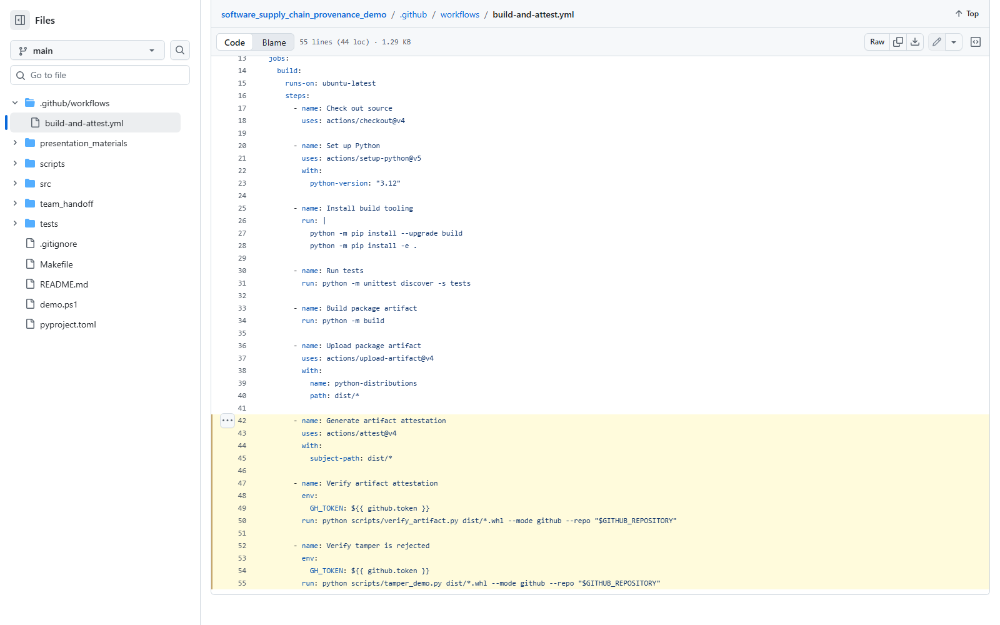

這份文件是給組員製作簡報用的完整交接資料。內容包含題目背景、實作專案、GitHub attestation 證據、每個資料夾用途、Demo 重跑方法、截圖使用建議，以及逐頁簡報規劃。
team_handoff/ 和 presentation_materials/ 是組員做簡報時最常用的兩個資料夾。
這個題目屬於現代軟體供應鏈安全。傳統報告常停在「程式碼有沒有簽章」或「檔案 hash 是否相同」，但現在攻擊者更常針對 CI/CD、build script、release artifact、套件上傳流程下手。因此簡報要把重點放在 artifact 從哪裡來、誰建的、用哪個 workflow 建的、是否被竄改。
actions/attest@v4 為 build output 產生 artifact attestation。gh attestation verify 驗證 artifact digest、repo、workflow、commit 等 provenance 資訊。| 常見誤解 | 正確說法 | 簡報怎麼講 |
|---|---|---|
| 有 hash 就等於安全 | hash 只能證明內容是否改變，不能證明它是誰建的。 | 先用 hash 當鋪陳，再說 provenance 補上來源與 build context。 |
| attestation 就是一般簽章 | attestation 是帶 metadata 的可驗證聲明，通常會綁定 artifact digest 和 build provenance。 | 用「簽的是 artifact 加上來源資訊」來解釋。 |
| CI 有過就代表 artifact 可信 | CI pass 只代表流程跑完，還要能把下載到的 artifact 綁回那次 build。 | 展示 verify pass 和 tamper fail 兩張 terminal 圖。 |
| 本地 manifest 就是正式 attestation | 本地 manifest 是 rehearsal，不是 signed attestation。正式證據來自 GitHub Actions 和 GitHub CLI 驗證。 | 把 local demo 說成練習版，把 GitHub demo 說成正式版。 |
| 名詞 | 意思 | 本專案例子 |
|---|---|---|
| Artifact | build 流程產出的檔案，可能是 wheel、binary、container image、installer。 | dist/hello_provenance_demo-0.1.0-py3-none-any.whl |
| Digest | artifact 內容的雜湊值。內容變一個 byte，SHA-256 就會改變。 | terminal 截圖中的 original sha256 和 tampered sha256。 |
| Provenance | 描述 artifact 生產過程的 metadata，例如 repo、commit、workflow、builder。 | GitHub Actions 產生的 SLSA build provenance。 |
| Attestation | 對 artifact 與 provenance 的可驗證聲明。它讓驗證者確認 artifact 是否符合宣稱來源。 | actions/attest@v4 產生的 GitHub artifact attestation。 |
| Verification policy | 驗證者接受 artifact 的條件，例如必須來自指定 repo、指定 workflow、digest 要吻合。 | scripts/verify_artifact.py 呼叫 gh attestation verify。 |
軟體供應鏈攻擊不一定要破解加密演算法。攻擊者只要能在 release 流程中替換 artifact、偷改 dependency、污染 build runner、或把惡意檔案偽裝成官方檔案，就可能成功。Provenance 的價值是讓使用者和平台可以問出更精準的問題：
簡報時可以把這個流程講成「從 source 到 artifact 的可驗證鏈」。真正要保護的不是單一檔案，而是 source code、CI/CD、build output、驗證政策 之間的連結。
| 來源 | 可引用重點 | 簡報用途 |
|---|---|---|
| GitHub Docs - Artifact attestations | GitHub Actions 可以為 build artifact 產生建立 build provenance 的 artifact attestation。產生時 workflow 需要設定 id-token: write、contents: read、attestations: write 等權限。 |
Slide 4 或 Slide 6 說明為什麼 workflow 要這些 permissions。 |
GitHub actions/attest |
actions/attest@v4 支援 provenance、SBOM、custom predicate。沒有提供 SBOM 或 custom predicate 時，預設會產生 SLSA build provenance attestation。 |
Slide 7 解釋這次 demo 用的是 build provenance 模式。 |
| SLSA v1.2 Provenance | Build provenance 的目標是把 build output 回溯到產生它的 source code 和 build process。 | Slide 3 定義 provenance，Slide 10 講限制與延伸。 |
| PEP 740 | Python packaging 生態也在推動 index-hosted digital attestations，重點是讓套件 index 能存放和驗證 provenance 相關資訊，而不是只靠舊式 PGP signature。 | Slide 4 說明這不是單一平台的玩具，而是套件生態的趨勢。 |
| Sigstore Docs | Sigstore 強調 identity-based signing、OIDC、短期憑證、Fulcio、Rekor transparency log。GitHub artifact attestation 背後也使用 Sigstore bundle 格式。 | Slide 4 補充為什麼現代簽章偏向 keyless / identity-based。 |
| 項目 | 狀態 | 證據 |
|---|---|---|
| 公開 GitHub repo | 完成 | repo home，截圖 01_repo_home.png |
| GitHub Actions build | 完成 | Run 26841214975 和 latest run 26842529539 都是 success |
| Artifact attestation | 完成 | 03_attestation_created.png，workflow 使用 actions/attest@v4 |
| 正式 GitHub verify | 完成 | 11_verify_pass_terminal.png 顯示原始 wheel 驗證通過 |
| Tamper 驗證 | 完成 | 12_tamper_fail_terminal.png 顯示竄改檔案驗證失敗 |
| 給組員截圖資料夾 | 完成 | team_handoff/screenshots/ 共有 12 張截圖 |
| Repo | https://github.com/blizzard-new/software_supply_chain_provenance_demo |
|---|---|
| 主要證據 run | 26841214975，commit c7ee14ad9699ec7a942ccc481d6be5aa87a622d9 |
| 最新 push 後 run | 26842529539，commit 246db4410bf8d55fe586cec56e13a849bff39356 |
| Artifact | python-distributions，wheel 檔名 hello_provenance_demo-0.1.0-py3-none-any.whl |

| 資料夾 | 裡面有什麼 | 組員怎麼用 |
|---|---|---|
.github/workflows/ | build-and-attest.yml。定義 GitHub Actions workflow：checkout、setup Python、test、build、upload artifact、generate attestation、verify、tamper rejected。 | 簡報第 6 至 7 頁可以放 workflow code 截圖，說明正式 GitHub attestation 是在 CI 裡產生。 |
src/hello_provenance/ | Python package source code。這是被 build 成 wheel 的示範 CLI。 | 簡報只要說明這是 demo artifact 的來源，不需要逐行解釋。 |
scripts/ | create_local_manifest.py、verify_artifact.py、tamper_demo.py、_common.py。 | 負責建立 rehearsal manifest、驗證 artifact、製造 tampered artifact。簡報第 8 至 9 頁重點展示 verify 和 tamper。 |
tests/ | CLI unit test。 | 說明 artifact 不是隨便包出來的，workflow 先跑測試再 build。 |
presentation_materials/ | 簡報摘要、逐頁大綱、研究資料、demo script、Q&A、Mermaid 圖、CSV。 | 組員做 PPT 前可以先讀這裡；如果時間不夠，直接讀本 PDF 第 9 節。 |
team_handoff/ | 給組員的交接資料：GitHub evidence、截圖 checklist、訊息草稿、本 PDF、HTML 原稿。 | 整個資料夾可以直接傳給組員。 |
team_handoff/screenshots/ | 12 張簡報可用截圖，含 GitHub 頁面、Actions、code、terminal。 | 簡報圖片來源。每張圖的用途在第 7 節列出。 |
dist/ | build 後產生的 wheel 和 sdist。通常是執行 build 或下載 GitHub artifact 後才會出現。 | Demo 重跑時會用到。若資料夾不存在，先執行 python -m build 或下載 GitHub artifact。 |
.demo/ | 本地 rehearsal 產物，例如 local manifest、tampered artifact。 | 只用於本地練習，不要把它講成正式 GitHub attestation。 |
| 檔案 | 用途 | 簡報重點 |
|---|---|---|
README.md | 專案總說明和 demo 指令。 | 組員第一次看 repo 先看這份。 |
pyproject.toml | Python package 設定，定義如何 build wheel。 | 證明 artifact 是標準 Python package build 產物。 |
.github/workflows/build-and-attest.yml | 正式 GitHub CI/CD 和 attestation 流程。 | 簡報技術核心。要講 permissions、build、attest、verify。 |
scripts/verify_artifact.py | 本地或 GitHub 模式驗證 artifact。GitHub 模式會呼叫 gh attestation verify。 | 解釋 verify pass 的 terminal output 從哪裡來。 |
scripts/tamper_demo.py | 複製 artifact，翻轉其中 1 byte，再跑 verify。 | 解釋 tamper fail 的實作畫面。 |
demo.ps1 | 本地 rehearsal 一鍵流程。 | 如果組員要自己錄 demo，可先跑本地版熟悉流程。 |
team_handoff/github_evidence.md | GitHub run、commit、artifact、digest 證據摘要。 | 簡報附錄或報告口頭佐證。 |
team_handoff/demo_screenshot_checklist.md | 截圖 checklist。 | 做簡報時確認圖沒有漏。 |
team_handoff/message_to_group.md | 可以傳給組員的訊息草稿。 | 你可以直接複製給組員。 |
這是正式版本。它依賴 GitHub Actions 已經在公開 repo 產生 attestation，然後用 GitHub CLI 驗證下載回來的 artifact。
gh auth login gh run download 26841214975 --name python-distributions --dir dist --repo blizzard-new/software_supply_chain_provenance_demo python scripts/verify_artifact.py dist/hello_provenance_demo-0.1.0-py3-none-any.whl --mode github --repo blizzard-new/software_supply_chain_provenance_demo python scripts/tamper_demo.py dist/hello_provenance_demo-0.1.0-py3-none-any.whl --mode github --repo blizzard-new/software_supply_chain_provenance_demo
這段 demo 要講的不是「我會用 CLI」，而是「同一個 artifact 可以驗證通過；只要 artifact 內容被改，digest 對不上，GitHub attestation verify 就會失敗」。
如果組員沒有 GitHub CLI 或沒有登入，可以先跑本地 rehearsal。注意：這不是正式 attestation，只是用 local manifest 練習 digest 驗證和 tamper fail。
.\demo.ps1
或手動執行：
python -m pip install build python -m pip install -e . python -m unittest discover -s tests python -m build python scripts/create_local_manifest.py python scripts/verify_artifact.py --mode local python scripts/tamper_demo.py --mode local


team_handoff/screenshots/ 已經整理好 12 張圖。組員不需要重新截圖，除非要換風格或補錄 live demo。
| 截圖 | 內容 | 建議放在哪一頁 | 講法 |
|---|---|---|---|
01_repo_home.png | 公開 repo 首頁。 | Slide 1 或最後附錄。 | 證明專案已經 push 到公開 GitHub。 |
02_actions_success.png | GitHub Actions run success。 | Slide 5。 | 展示完整 CI 流程都成功。 |
03_attestation_created.png | Generate artifact attestation step。 | Slide 7。 | 指出 attestation 是 workflow 產生，不是手寫文字。 |
04_verify_pass.png | Verify artifact attestation step。 | Slide 8 或備用。 | GitHub Actions 裡也有 verify pass。 |
05_tamper_fail.png | Verify tamper is rejected step。 | Slide 9 或備用。 | GitHub Actions 裡確認 tamper 會被拒絕。 |
06_workflow_code.png | workflow 前半段程式碼。 | Slide 6。 | 講 permissions、test、build、upload artifact。 |
07_verify_artifact_code.png | verify_artifact.py。 | Slide 8 或附錄。 | 講驗證腳本如何呼叫 GitHub CLI 並印出 digest、builder、workflow、commit。 |
08_tamper_demo_code.png | tamper_demo.py。 | Slide 9 或附錄。 | 講翻轉 1 byte 的 demo 是怎麼做出來的。 |
09_cli_code.png | CLI source code。 | Slide 5 或附錄。 | 證明 artifact 有實際 source code，不是空檔案。 |
10_workflow_attestation_verify_code.png | workflow 後半段。 | Slide 7。 | 講 actions/attest@v4、verify、tamper reject 三個關鍵步驟。 |
11_verify_pass_terminal.png | 本機 terminal 顯示 verify pass。 | Slide 8。 | 主 demo 證據。 |
12_tamper_fail_terminal.png | 本機 terminal 顯示 tamper fail。 | Slide 9。 | 主 demo 證據。 |

建議做 12 至 15 頁，報告時間如果是 12 至 15 分鐘，每頁平均 45 至 75 秒。重點是先講問題，再講技術，再講實作證據，最後講限制與延伸。
| 段落 | 頁數 | 目的 | 不要做的事 |
|---|---|---|---|
| 開場與問題 | 1 至 2 | 讓聽眾知道為什麼 artifact provenance 重要。 | 不要一開始就丟 workflow code。 |
| 概念與趨勢 | 3 至 4 | 定義 artifact、provenance、attestation，連到 GitHub / SLSA / PyPI / Sigstore。 | 不要把所有官方文件逐字塞進投影片。 |
| 系統設計 | 5 至 7 | 展示本專案架構和 GitHub Actions workflow。 | 不要逐行念程式碼，只框出關鍵步驟。 |
| Demo 證據 | 8 至 9 | 用 verify pass 和 tamper fail 證明有做出可驗證成果。 | 不要只放文字，這兩頁一定要有 terminal 截圖。 |
| 分析與限制 | 10 至 11 | 說明 attestation 解決什麼，沒有解決什麼。 | 不要宣稱 attestation 可以解決所有 supply chain risk。 |
| 結論與 Q&A | 12 至 15 | 收斂主軸，附 repo link、分工、Q&A。 | 不要在結尾加入新技術名詞。 |
「我們這組選的題目是軟體供應鏈簽章與可驗證 provenance。核心問題是：當使用者下載一個套件或 binary 時，怎麼知道它真的來自指定 source code 和指定 build workflow？我們用 GitHub Actions 實作了一個 Python artifact demo，產生 GitHub artifact attestation，並用 GitHub CLI 驗證原始 artifact 通過、竄改 artifact 失敗。」
「接下來我們不是只看 source code，而是看 build 出來的 wheel。這個 wheel 有 SHA-256 digest，GitHub attestation 裡也有 subject digest。如果兩者一致，就能驗證它對應到那次 GitHub Actions build。若我把 wheel 改掉 1 byte，digest 會改變，驗證就會失敗。」
「這個 demo 的價值在於把 release artifact 從『看起來像官方檔案』提升成『可以用 provenance 驗證來源』。它不能取代 code review、dependency scanning 或 SBOM，但可以補上 artifact 來源驗證這一層，讓供應鏈攻擊更難偽裝成正常 release。」
| 問題 | 建議回答 |
|---|---|
| 你們的 attestation 跟單純 hash 有什麼不同？ | hash 只證明檔案內容是否改變；attestation 會把 artifact digest 和來源資訊綁在一起，例如 repo、commit、workflow、builder。兩者不是替代關係，而是 attestation 會使用 digest 作為 subject。 |
| 如果 source code 一開始就是惡意的，attestation 會抓到嗎？ | 不會。attestation 證明 artifact 來自指定 source 和 build process，不保證 source code 本身無漏洞或無惡意。因此仍需要 code review、dependency scanning、測試、SBOM 等配套。 |
| 為什麼使用 GitHub Actions，而不是自己本機簽章？ | 本機簽章會牽涉長期金鑰管理，也很難證明 build context。GitHub Actions 可以用 OIDC 和 GitHub artifact attestations，把 workflow identity 和 build provenance 結合。 |
| 本地 manifest 算不算正式 provenance？ | 不算。本地 manifest 只是課堂 rehearsal，方便示範 digest 驗證和 tamper fail。正式 demo 是公開 GitHub repo 的 workflow 產生 artifact attestation，再用 GitHub CLI 驗證。 |
| 你們怎麼證明 tamper 真的被擋？ | tamper_demo.py 會複製 artifact 並翻轉其中 1 byte，接著重新跑 verify。terminal 截圖顯示 original sha256 和 tampered sha256 不同，tampered artifact 驗證失敗。 |
| 這套流程可以套到 container image 嗎？ | 可以，GitHub artifact attestations 和 actions/attest 也支援 container image，但 workflow 會改成使用 image name 和 digest。這次選 Python wheel 是為了讓期末 demo 更短、更容易驗證。 |
02_actions_success.png、10_workflow_attestation_verify_code.png、11_verify_pass_terminal.png、12_tamper_fail_terminal.png。這四張圖足以支撐「有 build、有 attestation、有 verify、有 tamper fail」。